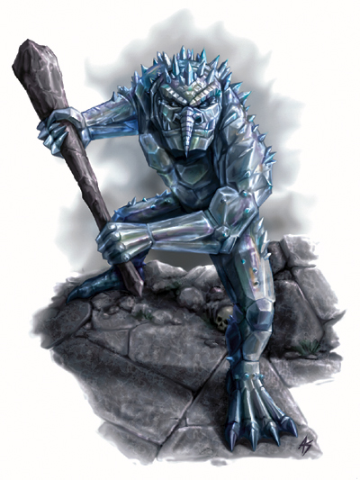

大型巨人
这个巨大、两足的野兽足有普通人类的两倍高。它有着长长的、并不庞大的胳膊和腿，隐藏在一线微光之处，反射，折射着光芒。

| 生命骰： | 10d8+60（105hp） |
| 先攻： | +2 |
| 速度： | 30尺（6格） |
| 防御等级： | 18（-1体型，+2敏捷 +7天生），接触11，措手不及16 |
| 基本攻击/擒抱： | +7/+17 |
| 攻击： | 爪抓+12 近战（1d6+6） |
| 全力攻击： | 2爪抓+12 近战（1d6+6）和啮咬+7 近战（1d6+3） |
| 面宽/触及： | 10英尺/10英尺 |
| 特殊攻击： | 撕扯 |
| 特殊能力： | 黑暗视觉 60ft，对强酸免疫，昏暗视觉，再生5，盲感40ft，灵敏嗅觉，畏惧音波 |
| 豁免： | 强韧+23，反射+5，意志+4 |
| 属性： | 力量23，敏捷14，体质23，智力6，感知9，魅力9 |
| 技能： | 聆听+7，侦察+8 |
| 专长： | 警觉，钢铁意志，猛力攻击，追踪 |
| 地域： | 温带山脉 |
| 组织： | 单独或小群（2-5） |
| 挑战等级： | 7 |
| 宝物： | 标准 |
| 阵营： | 通常混乱中立 |
| 进化： | 根据人物职业 |
| 等级调整： | +5 |
比起那些通常意义上的巨魔，水晶巨魔要有魅力多了，而且在野性上也略显驯服。水晶巨魔的皮肤是由类似玻璃的原料构成的，使这个生物看起来就像是一头覆盖在水晶岩下的巨魔。
水晶巨魔的站立高度比普通巨魔更高，一个成年的水晶巨魔足有11尺高，600磅重。
水晶巨魔使用巨人语。
和普通巨魔一样，水晶巨魔对死亡毫无畏惧，并会抱着极大的精力和愉悦参与到战斗中，它们攻击最接近的敌人。甚至在受到音波伤害时，这种巨魔仍旧会展开持续攻击。
撕扯（Ex）： 如果一头水晶巨魔同时用双爪攻击，它将勾锁住敌人的躯体并撕扯其血肉。这种攻击自动造成一次2d6+9的额外伤害。
再生（Ex）：音波攻击对水晶巨魔造成普通伤害。如果它失去了肢体或身体的一部分，失去的部分会在3d6分钟内重生。这些分成数段的残肢在被安放到本体后能够立即重新接合复原。
水晶巨魔人物拥有下列种族特性
――+12 力量，+4敏捷，+12体质 -4智力（最低为3），-2感知，-2魅力
――大体型，-1AC罚值，-1攻击检定，-4躲藏检定，+4擒抱检定，拖拉和负重上线是中体型生物的两倍。
――面宽/触及：10ft/10ft
――水晶巨魔的基本陆上速度为30ft
――黑暗视觉 60ft，昏暗视觉
――种族生命骰：水晶巨魔的起始等级为十级巨人，拥有10D8个生命骰，基本攻击加值+7，基本豁免检定 强韧+7，反射+3，意志+3
――种族技能：水晶巨魔的巨人等级给予它13*（2+智力调整值――至少为1）个技能点。职业技能为聆听和侦察。
――种族专长：水晶巨魔的巨人等级给予它四个专长
――+7天生防御
――天生武器：2爪击（1D6）和啮咬（1D6）
――特殊攻击（参见上文）撕扯，伤害 2D6+力量调整值*1-1/2
――特殊属性：对强酸免疫，再生5，灵敏嗅觉，畏惧音波
――天生语言：巨人语；额外语言：通用语，兽人语
――等级调整 +5
艾伯伦的水晶巨魔
水晶巨魔栖息在海墙山脉（Seawall Mountains）并捕食掠夺穿越山脉区域的商队，行人。Zilargo的侏儒已经花费金钱在进入山脉的队伍上以期消灭水晶巨魔，尽管他们的努力只取得了及其有限的效果。一些水晶巨魔已经被Darguun的地精军队捕获。